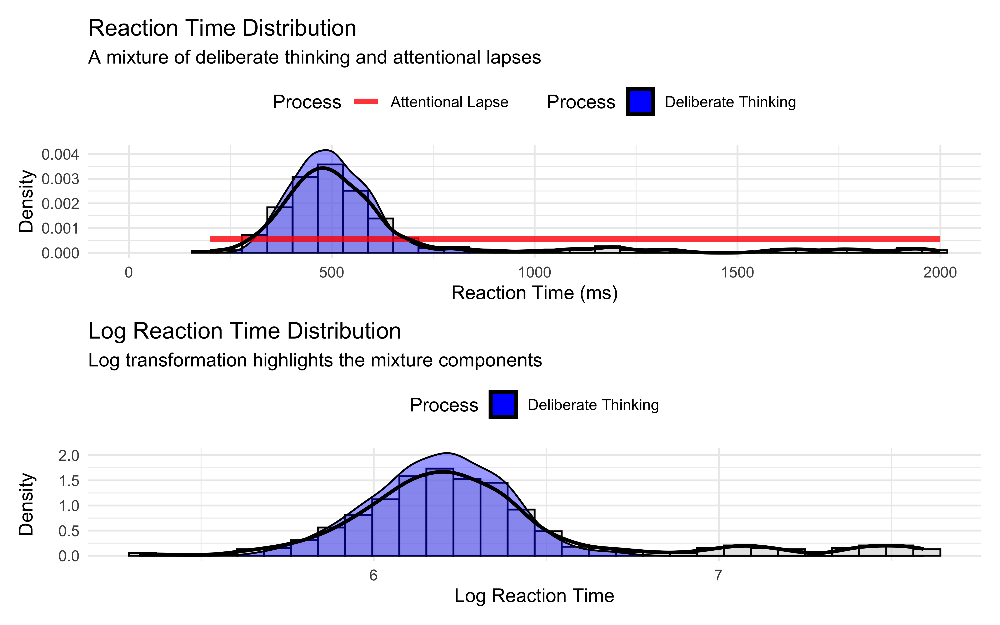
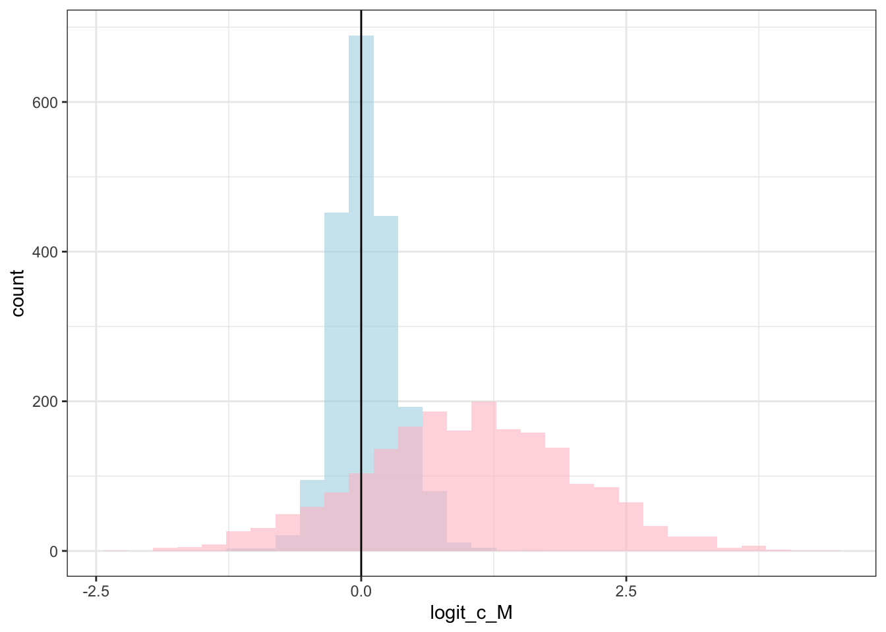
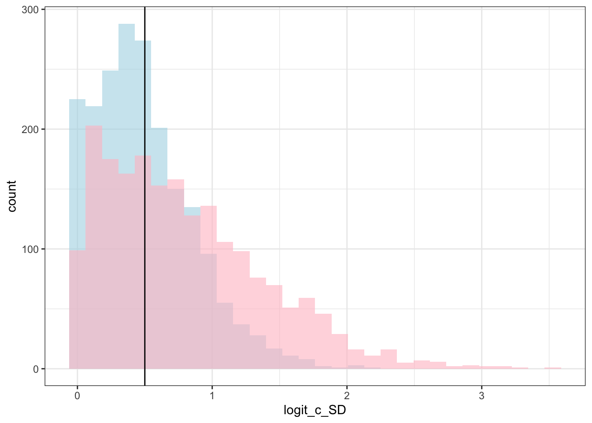
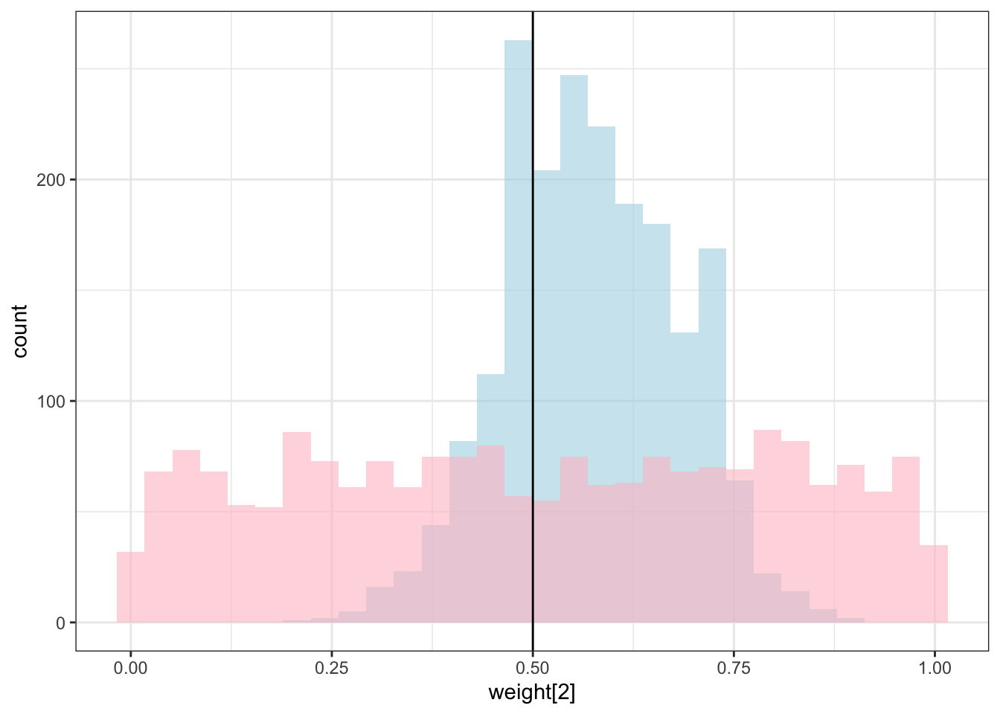

Chapter 10 Categorization models
In this module the course covers formal models of categorization. In particular, here we implement a version of the Generalized Context Model (from now on GCM).
[MISSING: INTRODUCTION TO THE GCM]
In order to understand the GCM, we will rely on a setup from Kruschke 1993. Participants go through 8 blocks of trials. Within each block, participants see 8 stimuli, the same across every block. Each stimulus has to be categorised (classified) as belonging to either category A or category B. After categorizing a stimulus, feedback is given, so that the participant knows which category the stimulus truly belongs to.
The stimuli differ along two continuous dimensions (more specifically the height of a square and the position of a line with it).
Following on the structure in Kruschke 1993, we need to start simulating data. Let’s start with the stimuli.
# Defining the stimuli, their height and position features, and their category
stimulus <- c(5,3,7,1,8,2,6,4)
height <- c(1,1, 2,2, 3,3, 4,4)
position <- c(2,3, 1,4, 1,4, 2,3)
category <- as.factor(c(0,0, 1,0, 1,0, 1,1))
# Making this into a tibble
stimuli <- tibble(stimulus, height, position, category)
# Plotting to make sure all looks right
ggplot(stimuli, aes(position, height, color = category, label = stimulus)) +
geom_point(shape = 16, size = 3) +
geom_label() +
geom_abline(intercept = 0, slope = 1, linetype = "dashed") +
theme_bw()
# Generating the sequence of stimuli in the full experiment
sequence <- c()
for (i in 1:8) {
temp <- sample(seq(8), 8, replace = F)
sequence <- append(sequence, temp)
}
experiment <- tibble(stimulus = sequence, height = NA, position = NA, category = NA)
for (i in seq(nrow(experiment))) {
experiment$height[i] <- stimuli$height[stimuli$stimulus == experiment$stimulus[i]]
experiment$position[i] <- stimuli$position[stimuli$stimulus == experiment$stimulus[i]]
experiment$category[i] <- as.numeric(as.character(stimuli$category[stimuli$stimulus == experiment$stimulus[i]]))
}We then have to simulate an agent using the GCM to assess the stimuli. N.B. code based on work by Sara Østergaard
First we define functions for distance and similarity and assess them. Distance takes feature values along n dimensions and calculate their euclidean distance, weighing dimensions according to pregiven weights (w). Similarity decays exponentially with distance, with a pre-given exponent (c). See plot.
# Distance
distance <- function(vect1, vect2, w) {
return(sum(w * abs(vect1 - vect2)))
}
# Similarity
similarity <- function(distance, c) {
return(exp(-c * distance))
}
# Let's assess similarity
dd <- tibble(
expand_grid(
distance = c(0,.1,.2, .3,.4,.5,1,1.5,2,3,4,5,6),
c = c(0.1, 0.2, 0.5, 0.7, 1, 1.5, 2, 3, 4, 5, 6))) %>%
mutate(
similarity = similarity(distance, c)
)
dd %>% mutate(c = factor(c)) %>%
ggplot() +
geom_line(aes(distance, similarity, group = c, color = c)) +
theme_bw()
With distance and similarity in place, we now need to implement an agent that can observe stimuli, put them into categories according to feedback and - once enough stimuli are collected to have at least one exemplar in each category - compare stimuli to exemplars in each category and assess which category is more likely. In other words: 1) if not enough stimuli have already been observed, the agent picks a category at random, receives feedback and adjusts accordingly the category; otherwise, 2) it assesses average distance (according to weights) from observed exemplars by category; calculates similarity (according to c); and uses the relative similarity to the two categories to produce a probability of choosing category one. then it receives feedback and adjusts category accordingly.
As usual we make the agent a function, so that we can more easily deploy it.
### generative model ###
gcm <- function(w, c, obs, cat_one, quiet = TRUE) {
# create an empty list to save probability of saying "1" for each trial
r <- c()
ntrials <- nrow(obs)
for (i in 1:ntrials) {
# If quiet is FALSE, print every ten trials
if (!quiet && i %% 10 == 0) {
print(paste("i =", i))
}
# if this is the first trial, or there any category with no exemplars seen yet, set the choice to random
if (i == 1 || sum(cat_one[1:(i - 1)]) == 0 || sum(cat_one[1:(i - 1)]) == (i - 1)) {
r <- c(r, .5)
} else {
similarities <- c()
# for each previously seen stimulus assess distance and similarity
for (e in 1:(i - 1)) {
sim <- similarity(distance(obs[i, ], obs[e, ], w), c)
similarities <- c(similarities, sim)
}
# Calculate prob of saying "1" by dividing similarity to 1 by the sum of similarity to 1 and to 2
numerator <- 0.5 * sum(similarities[cat_one[1:(i - 1)] == 1])
denominator <- 0.5 * sum(similarities[cat_one[1:(i - 1)] == 1]) + 0.5 * sum(similarities[cat_one[1:(i - 1)] == 0])
r <- c(r, numerator / denominator)
}
}
return(rbinom(ntrials, 1, r))
}With the agent in place, we can now simulate behavior on our simulated stimuli and observe the impact of different weights and scaling parameters c.
# function for simulation responses
simulate_responses <- function(agent, w, c) {
observations <- experiment %>%
select(c("height", "position"))
category <- experiment$category
if (w == "equal") {
weight <- rep(1 / 2, 2)
} else if (w == "skewed1") {
weight <- c(0, 1)
} else if (w == "skewed2") {
weight <- c(0.1, 0.9)
}
# simulate responses
responses <- gcm(
weight,
c,
observations,
category
)
tmp_simulated_responses <- experiment %>%
mutate(
trial = seq(nrow(experiment)),
sim_response = responses,
correct = ifelse(category == sim_response, 1, 0),
performance = cumsum(correct) / seq_along(correct),
c = c,
w = w,
agent = agent
)
return(tmp_simulated_responses)
}
# simulate responses
plan(multisession, workers = availableCores())
param_df <- dplyr::tibble(
expand_grid(
agent = 1:10,
c = seq(.1, 2, 0.2),
w = c("equal", "skewed1", "skewed2")
)
)
simulated_responses <- future_pmap_dfr(param_df,
simulate_responses,
.options = furrr_options(seed = TRUE)
)And now we can try a few plots to better understand how the model fares and the difference made by weights and scaling factors.
p3 <- simulated_responses %>%
mutate(w = as.factor(w)) %>%
ggplot(aes(trial, performance, group = w, color = w)) +
geom_smooth() +
theme_bw() +
facet_wrap(c ~ .)
p4 <- simulated_responses %>%
mutate(c = as.factor(c)) %>%
ggplot(aes(trial, performance, group = c, color = c)) +
geom_smooth() +
theme_bw() +
facet_wrap(w ~ .)
p3 + p4## `geom_smooth()` using method = 'loess' and formula = 'y ~ x'
## `geom_smooth()` using method = 'loess' and formula = 'y ~ x'
p5 <- simulated_responses %>%
mutate(c = as.factor(c)) %>%
ggplot(aes(st, performance, group = c, color = c)) +
geom_smooth() +
theme_bw() +
facet_wrap(w ~ .)[MISSING: Discussion of how to make sense of the plots: Equal Weights (matching the actual rule) generating better decisions as long as c is above 1]
While we could try different scenarios, let us now move on to inference. We need to build the same GCM model in Stan.
[MISSING: MORE DETAILED EXPLANATION]
gcm_model <- "
// Generalized Context Model (GCM)
data {
int<lower=1> ntrials; // number of trials
int<lower=1> nfeatures; // number of predefined relevant features
array[ntrials] int<lower=0, upper=1> cat_one; // true responses on a trial by trial basis
array[ntrials] int<lower=0, upper=1> y; // decisions on a trial by trial basis
array[ntrials, nfeatures] real obs; // stimuli as vectors of features
real<lower=0, upper=1> b; // initial bias for category one over two
// priors
vector[nfeatures] w_prior_values; // concentration parameters for dirichlet distribution <lower=1>
array[2] real c_prior_values; // mean and variance for logit-normal distribution
}
transformed data {
array[ntrials] int<lower=0, upper=1> cat_two; // dummy variable for category two over cat 1
array[sum(cat_one)] int<lower=1, upper=ntrials> cat_one_idx; // array of which stimuli are cat 1
array[ntrials-sum(cat_one)] int<lower=1, upper=ntrials> cat_two_idx; // array of which stimuli are cat 2
int idx_one = 1; // Initializing
int idx_two = 1;
for (i in 1:ntrials){
cat_two[i] = abs(cat_one[i]-1);
if (cat_one[i]==1){
cat_one_idx[idx_one] = i;
idx_one +=1;
} else {
cat_two_idx[idx_two] = i;
idx_two += 1;
}
}
}
parameters {
simplex[nfeatures] w; // simplex means sum(w)=1
real logit_c;
}
transformed parameters {
// parameter c
real<lower=0, upper=2> c = inv_logit(logit_c)*2; // times 2 as c is bounded between 0 and 2
// parameter r (probability of response = category 1)
array[ntrials] real<lower=0.0001, upper=0.9999> r;
array[ntrials] real rr;
for (i in 1:ntrials) {
// calculate distance from obs to all exemplars
array[(i-1)] real exemplar_sim;
for (e in 1:(i-1)){
array[nfeatures] real tmp_dist;
for (j in 1:nfeatures) {
tmp_dist[j] = w[j]*abs(obs[e,j] - obs[i,j]);
}
exemplar_sim[e] = exp(-c * sum(tmp_dist));
}
if (sum(cat_one[:(i-1)])==0 || sum(cat_two[:(i-1)])==0){ // if there are no examplars in one of the categories
r[i] = 0.5;
} else {
// calculate similarity
array[2] real similarities;
array[sum(cat_one[:(i-1)])] int tmp_idx_one = cat_one_idx[:sum(cat_one[:(i-1)])];
array[sum(cat_two[:(i-1)])] int tmp_idx_two = cat_two_idx[:sum(cat_two[:(i-1)])];
similarities[1] = sum(exemplar_sim[tmp_idx_one]);
similarities[2] = sum(exemplar_sim[tmp_idx_two]);
// calculate r[i]
rr[i] = (b*similarities[1]) / (b*similarities[1] + (1-b)*similarities[2]);
// to make the sampling work
if (rr[i] > 0.9999){
r[i] = 0.9999;
} else if (rr[i] < 0.0001) {
r[i] = 0.0001;
} else if (rr[i] > 0.0001 && rr[i] < 0.9999) {
r[i] = rr[i];
} else {
r[i] = 0.5;
}
}
}
}
model {
// Priors
target += dirichlet_lpdf(w | w_prior_values);
target += normal_lpdf(logit_c | c_prior_values[1], c_prior_values[2]);
// Decision Data
target += bernoulli_lpmf(y | r);
}
generated quantities {
// priors
simplex[nfeatures] w_prior = dirichlet_rng(w_prior_values);
real logit_c_prior = normal_rng(c_prior_values[1], c_prior_values[2]);
real<lower=0, upper=2> c_prior = inv_logit(logit_c_prior)*2;
// prior pred
array[ntrials] real<lower=0, upper=1> r_prior;
array[ntrials] real rr_prior;
for (i in 1:ntrials) {
// calculate distance from obs to all exemplars
array[(i-1)] real exemplar_dist;
for (e in 1:(i-1)){
array[nfeatures] real tmp_dist;
for (j in 1:nfeatures) {
tmp_dist[j] = w_prior[j]*abs(obs[e,j] - obs[i,j]);
}
exemplar_dist[e] = sum(tmp_dist);
}
if (sum(cat_one[:(i-1)])==0 || sum(cat_two[:(i-1)])==0){ // if there are no examplars in one of the categories
r_prior[i] = 0.5;
} else {
// calculate similarity
array[2] real similarities;
array[sum(cat_one[:(i-1)])] int tmp_idx_one = cat_one_idx[:sum(cat_one[:(i-1)])];
array[sum(cat_two[:(i-1)])] int tmp_idx_two = cat_two_idx[:sum(cat_two[:(i-1)])];
similarities[1] = exp(-c_prior * sum(exemplar_dist[tmp_idx_one]));
similarities[2] = exp(-c_prior * sum(exemplar_dist[tmp_idx_two]));
// calculate r[i]
rr_prior[i] = (b*similarities[1]) / (b*similarities[1] + (1-b)*similarities[2]);
// to make the sampling work
if (rr_prior[i] == 1){
r_prior[i] = 0.9999;
} else if (rr_prior[i] == 0) {
r_prior[i] = 0.0001;
} else if (rr_prior[i] > 0 && rr_prior[i] < 1) {
r_prior[i] = rr_prior[i];
} else {
r_prior[i] = 0.5;
}
}
}
array[ntrials] int<lower=0, upper=1> priorpred = bernoulli_rng(r_prior);
// posterior pred
array[ntrials] int<lower=0, upper=1> posteriorpred = bernoulli_rng(r);
array[ntrials] int<lower=0, upper=1> posteriorcorrect;
for (i in 1:ntrials) {
if (posteriorpred[i] == cat_one[i]) {
posteriorcorrect[i] = 1;
} else {
posteriorcorrect[i] = 0;
}
}
// log likelihood
array[ntrials] real log_lik;
for (i in 1:ntrials) {
log_lik[i] = bernoulli_lpmf(y[i] | r[i]);
}
}"
write_stan_file(
gcm_model,
dir = "stan/",
basename = "W10_GCM.stan")## [1] "/Users/au209589/Dropbox/Teaching/AdvancedCognitiveModeling23_book/stan/W10_GCM.stan"file <- file.path("stan/W10_GCM.stan")
mod_GCM <- cmdstan_model(file, cpp_options = list(stan_threads = TRUE),
stanc_options = list("O1"))Now it’s time to fit the data
d <- simulated_responses %>% subset(
c == "1.1" & w == "equal"
)
gcm_data <- list(
ntrials = nrow(d),
nfeatures = 2,
cat_one = d$category,
y = d$sim_response,
obs = as.matrix(d[, c("height", "position")]),
b = 0.5,
w_prior_values = c(1, 1),
c_prior_values = c(0, 1)
)
samples_gcm <- mod_GCM$sample(
data = gcm_data,
seed = 123,
chains = 1,
parallel_chains = 1,
threads_per_chain = 4,
iter_warmup = 1000,
iter_sampling = 1000,
refresh = 500
)## Running MCMC with 1 chain, with 4 thread(s) per chain...
##
## Chain 1 Iteration: 1 / 2000 [ 0%] (Warmup)
## Chain 1 Iteration: 500 / 2000 [ 25%] (Warmup)
## Chain 1 Iteration: 1000 / 2000 [ 50%] (Warmup)
## Chain 1 Iteration: 1001 / 2000 [ 50%] (Sampling)
## Chain 1 Iteration: 1500 / 2000 [ 75%] (Sampling)
## Chain 1 Iteration: 2000 / 2000 [100%] (Sampling)
## Chain 1 finished in 299.5 seconds.Now we need to check the model
## Processing csv files: /var/folders/lt/zspkqnxd5yg92kybm5f433_cfjr0d6/T/RtmpYpbuAD/W10_GCM-202401311202-1-6afe77.csv
##
## Checking sampler transitions treedepth.
## Treedepth satisfactory for all transitions.
##
## Checking sampler transitions for divergences.
## No divergent transitions found.
##
## Checking E-BFMI - sampler transitions HMC potential energy.
## E-BFMI satisfactory.
##
## Effective sample size satisfactory.
##
## Split R-hat values satisfactory all parameters.
##
## Processing complete, no problems detected.## # A tibble: 5,129 × 10
## variable mean median sd mad q5 q95 rhat ess_bulk ess_tail
## <chr> <dbl> <dbl> <dbl> <dbl> <dbl> <dbl> <dbl> <dbl> <dbl>
## 1 lp__ -372. -372. 1.05 0.734 -374. -371. 1.00 459. 548.
## 2 w[1] 0.470 0.467 0.0558 0.0535 0.377 0.568 1.00 873. 619.
## 3 w[2] 0.530 0.533 0.0558 0.0535 0.432 0.623 1.00 873. 619.
## 4 logit_c 0.218 0.214 0.172 0.174 -0.0484 0.492 1.00 747. 526.
## 5 c 1.11 1.11 0.0842 0.0859 0.976 1.24 1.00 747. 526.
## 6 r[1] 0.5 0.5 0 0 0.5 0.5 NA NA NA
## 7 r[2] 0.5 0.5 0 0 0.5 0.5 NA NA NA
## 8 r[3] 0.517 0.519 0.0309 0.0297 0.464 0.567 1.00 880. 620.
## 9 r[4] 0.758 0.757 0.0432 0.0408 0.683 0.828 1.00 942. 740.
## 10 r[5] 0.910 0.910 0.00855 0.00867 0.896 0.924 1.00 733. 515.
## # ℹ 5,119 more rowsdraws_df <- as_draws_df(samples_gcm$draws())
ggplot(draws_df, aes(.iteration, c, group = .chain, color = .chain)) +
geom_line(alpha = 0.5) +
theme_classic()
ggplot(draws_df, aes(.iteration, logit_c, group = .chain, color = .chain)) +
geom_line(alpha = 0.5) +
theme_classic()
ggplot(draws_df, aes(.iteration, `w[1]`, group = .chain, color = .chain)) +
geom_line(alpha = 0.5) +
theme_classic()
ggplot(draws_df, aes(.iteration, `w[2]`, group = .chain, color = .chain)) +
geom_line(alpha = 0.5) +
theme_classic()
ggplot(draws_df) +
geom_histogram(aes(c), alpha = 0.6, fill = "lightblue") +
geom_histogram(aes(c_prior), alpha = 0.6, fill = "pink") +
geom_vline(xintercept = d$c[1]) +
theme_bw()## `stat_bin()` using `bins = 30`. Pick better value with `binwidth`.
## `stat_bin()` using `bins = 30`. Pick better value with `binwidth`.
ggplot(draws_df) +
geom_histogram(aes(`w[1]`), alpha = 0.6, fill = "lightblue") +
geom_histogram(aes(`w_prior[1]`), alpha = 0.6, fill = "pink") +
geom_vline(xintercept = 0.5) +
theme_bw()## `stat_bin()` using `bins = 30`. Pick better value with `binwidth`.
## `stat_bin()` using `bins = 30`. Pick better value with `binwidth`.
ggplot(draws_df) +
geom_histogram(aes(`w[2]`), alpha = 0.6, fill = "lightblue") +
geom_histogram(aes(`w_prior[2]`), alpha = 0.6, fill = "pink") +
geom_vline(xintercept = 0.5) +
theme_bw()## `stat_bin()` using `bins = 30`. Pick better value with `binwidth`.
## `stat_bin()` using `bins = 30`. Pick better value with `binwidth`.


C looks like crap, while weights seem decently recovered. Let’s look at the larger picture, but looping through the different combinations of parameter values.
pacman::p_load(future, purrr, furrr)
plan(multisession, workers = availableCores())
sim_d_and_fit <- function(agent, scaling, weights) {
temp <- simulated_responses %>% subset(
c == scaling & w == weights & agent == agent
)
data <- list(
ntrials = nrow(temp),
nfeatures = 2,
cat_one = temp$category,
y = temp$sim_response,
obs = as.matrix(temp[, c("height", "position")]),
b = 0.5,
w_prior_values = c(1, 1),
c_prior_values = c(0, 1)
)
samples_gcm <- mod_GCM$sample(
data = data,
seed = 123,
chains = 1,
parallel_chains = 1,
threads_per_chain = 4,
iter_warmup = 1000,
iter_sampling = 1000,
refresh = 500
)
draws_df <- as_draws_df(samples_gcm$draws())
temp <- tibble(trueC = scaling, trueW = weights, agent = agent,
estC = draws_df$c,
estW1 = draws_df$`w[1]`,
estW2 = draws_df$`w[2]`
)
return(temp)
}
temp <- tibble(unique(simulated_responses[,c("agent", "c", "w")])) %>%
rename(
scaling = c,
weights = w
)
recovery_df <- future_pmap_dfr(temp, sim_d_and_fit, .options = furrr_options(seed = TRUE))
write_csv(recovery_df, "simdata/W10_GCM_recoverydf.csv")Time to visualize
## Rows: 300000 Columns: 6
## ── Column specification ─────────────────────────────────────────────────────────────────────────────────────────
## Delimiter: ","
## chr (1): trueW
## dbl (5): trueC, agent, estC, estW1, estW2
##
## ℹ Use `spec()` to retrieve the full column specification for this data.
## ℹ Specify the column types or set `show_col_types = FALSE` to quiet this message.p1 <- ggplot(recovery_df) +
geom_density(aes(estC, group = trueW, fill = trueW), alpha = 0.3) +
#geom_vline(xintercept = trueC) +
facet_wrap(. ~ trueC) +
theme_bw()
p2 <- ggplot(recovery_df) +
geom_density(aes(estW1, group = trueW, fill = trueW), alpha = 0.3) +
#geom_vline(xintercept = trueC) +
facet_wrap(trueC ~ .) +
theme_bw()
p1 / p2
10.1 Multilevel GCM
[MISSING: quick reminder of what it means to make GCM multilevel: weights and can vary by participants, but they do not do so in correlated ways]
10.1.1 Simulate hierarchical simplices
We need weights that sum up to 1 at the population level and at the individual level. Let’s simulate the dirichlet distribution to see how it does it.
simulate_dirichlet <- function(weights, kappa, agents){
w_n <- length(weights)
w_ind <- rdirichlet(agents, weights * kappa)
w_ind_df <- tibble(
agent = as.factor(rep(seq(agents), each = w_n)),
value = c(w_ind),
weight = rep(seq(w_n), agents)
)
return(w_ind_df)
}
d <- simulate_dirichlet(weights = c(0.5, 0.5), kappa = 100, agents = 10)
p1 <- ggplot(d, aes(weight, value, group = agent, color = agent)) +
geom_point() +
geom_line(linetype = "dashed", alpha = 0.5) +
ylim(0,1) +
theme_bw()
d <- simulate_dirichlet(weights = c(0.5, 0.5), kappa = 1, agents = 10)
p2 <- ggplot(d, aes(weight, value, group = agent, color = agent)) +
geom_point() +
geom_line(linetype = "dashed", alpha = 0.5) +
ylim(0,1) +
theme_bw()
p1 + p2
10.1.2 Set up the data simulation
We need to feed: - agents - scaling (M and SD) - weights (weights and concentration)
agents <- 10
scalingM <- 1
scalingSD <- 0.1
weights <- c(0.5,0.5)
kappa <- 1
# First one agent, just to make sure it works
simulate_responses <- function(agent, weights, c) {
observations <- experiment %>%
select(c("height", "position"))
category <- experiment$category
# simulate responses
responses <- gcm(
weights,
c,
observations,
category
)
tmp_simulated_responses <- experiment %>%
mutate(
trial = seq(nrow(experiment)),
sim_response = responses,
correct = ifelse(category == sim_response, 1, 0),
performance = cumsum(correct) / seq_along(correct),
c = c,
w1 = weights[1],
w2 = weights[2],
agent = agent
)
return(tmp_simulated_responses)
}
d <- simulate_responses(agents, weights, scalingM)
## Then we make sure to simulate n agents
simulate_ml_responses <- function(agents, scalingM, scalingSD, weights, kappa) {
w_ind <- rdirichlet(agents, weights * kappa)
c_ind <- rnorm(agents, scalingM, scalingSD)
for (i in 1:agents) {
tmp <- simulate_responses(i, weights = c(w_ind[i,1:2]), c = c_ind[i])
if (i == 1) {
simulated_responses <- tmp
} else {
simulated_responses <- rbind(simulated_responses, tmp)
}
}
return(simulated_responses)
}
# Simulate and visualize
d <- simulate_ml_responses(agents, scalingM, scalingSD, weights, kappa)
ggplot(d, aes(trial, performance)) +
geom_smooth() +
geom_line(aes(group = agent, color = agent)) +
theme_bw()## `geom_smooth()` using method = 'loess' and formula = 'y ~ x'
10.1.3 Set up the Stan model
gcm_ml_model <- "
// Generalized Context Model (GCM) - multilevel version
data {
int<lower=1> nsubjects; // number of subjects
int<lower=1> ntrials; // number of trials
int<lower=1> nfeatures; // number of predefined relevant features
array[ntrials] int<lower=0, upper=1> cat_one; // true responses on a trial by trial basis
array[ntrials, nsubjects] int<lower=0, upper=1> y; // decisions on a trial by trial basis
array[ntrials, nfeatures] real obs; // stimuli as vectors of features assuming all participants get the same sequence
real<lower=0, upper=1> b; // initial bias for category one over two
// priors
vector[nfeatures] w_prior_values; // concentration parameters for dirichlet distribution <lower=1>
array[2] real c_prior_values; // mean and variance for logit-normal distribution
}
transformed data { // assuming all participants get the same sequence
array[ntrials] int<lower=0, upper=1> cat_two; // dummy variable for category two over cat 1
array[sum(cat_one)] int<lower=1, upper = ntrials> cat_one_idx; // array of which stimuli are cat 1
array[ntrials - sum(cat_one)] int<lower = 1, upper = ntrials> cat_two_idx; // array of which stimuli are cat 2
int idx_one = 1; // Initializing
int idx_two = 1;
for (i in 1:ntrials){
cat_two[i] = abs(cat_one[i]-1);
if (cat_one[i]==1){
cat_one_idx[idx_one] = i;
idx_one +=1;
} else {
cat_two_idx[idx_two] = i;
idx_two += 1;
}
}
}
parameters {
real logit_c_M; // Pop Mean of the scaling parameter (how fast similarity decrease with distance).
real<lower = 0> logit_c_SD; // Pop SD of the scaling parameter (how fast similarity decrease with distance).
vector[nsubjects] logit_c; // scaling parameter (how fast similarity decrease with distance).
simplex[nfeatures] weight; // simplex means sum(w)=1
real<lower=0> kappa;
array[nsubjects] simplex[nfeatures] w_ind; // weight parameter (how much attention should be paid to feature 1 related to feature 2 - summing up to 1)
}
transformed parameters {
// parameter w
vector[nfeatures] alpha = kappa * weight;
// parameter c
vector<lower=0,upper=2>[nsubjects] c = inv_logit(logit_c)*2; // times 2 as c is bounded between 0 and 2
// parameter r (probability of response = category 1)
array[ntrials, nsubjects] real<lower=0.0001, upper=0.9999> r;
array[ntrials, nsubjects] real rr;
for (sub in 1:nsubjects) {
for (trial in 1:ntrials) {
// calculate distance from obs to all exemplars
array[(trial-1)] real exemplar_sim;
for (e in 1:(trial-1)){
array[nfeatures] real tmp_dist;
for (feature in 1:nfeatures) {
tmp_dist[feature] = w_ind[sub,feature]*abs(obs[e,feature] - obs[trial,feature]);
}
exemplar_sim[e] = exp(-c[sub] * sum(tmp_dist));
}
if (sum(cat_one[:(trial-1)])==0 || sum(cat_two[:(trial-1)])==0){ // if there are no examplars in one of the categories
r[trial,sub] = 0.5;
} else {
// calculate similarity
array[2] real similarities;
array[sum(cat_one[:(trial-1)])] int tmp_idx_one = cat_one_idx[:sum(cat_one[:(trial-1)])];
array[sum(cat_two[:(trial-1)])] int tmp_idx_two = cat_two_idx[:sum(cat_two[:(trial-1)])];
similarities[1] = sum(exemplar_sim[tmp_idx_one]);
similarities[2] = sum(exemplar_sim[tmp_idx_two]);
// calculate r
rr[trial,sub] = (b*similarities[1]) / (b*similarities[1] + (1-b)*similarities[2]);
// to make the sampling work
if (rr[trial,sub] > 0.9999){
r[trial,sub] = 0.9999;
} else if (rr[trial,sub] < 0.0001) {
r[trial,sub] = 0.0001;
} else if (rr[trial,sub] > 0.0001 && rr[trial,sub] < 0.9999) {
r[trial,sub] = rr[trial,sub];
} else {
r[trial,sub] = 0.5;
}}}}}
model {
// Priors
target += exponential_lpdf(kappa | 0.1);
target += dirichlet_lpdf(weight | w_prior_values);
target += normal_lpdf(logit_c_M | c_prior_values[1], c_prior_values[2]);
target += normal_lpdf(logit_c_SD | 0, 1) - normal_lccdf(0 | 0, 1);
target += normal_lpdf(logit_c | logit_c_M, logit_c_SD);
// Decision Data
for (sub in 1:nsubjects){
target += dirichlet_lpdf(w_ind[sub] | alpha);
for (trial in 1:ntrials){
target += bernoulli_lpmf(y[trial,sub] | r[trial,sub]);
}
}
}
// generated quantities {
// // priors
// simplex[nfeatures] w_prior = dirichlet_rng(w_prior_values);
// real logit_c_prior = normal_rng(c_prior_values[1], c_prior_values[2]);
// real<lower=0, upper=2> c_prior = inv_logit(logit_c_prior)*2;
//
// // prior pred
// array[ntrials] real<lower=0, upper=1> r_prior;
// array[ntrials] real rr_prior;
// for (i in 1:ntrials) {
//
// // calculate distance from obs to all exemplars
// array[(i-1)] real exemplar_dist;
// for (e in 1:(i-1)){
// array[nfeatures] real tmp_dist;
// for (j in 1:nfeatures) {
// tmp_dist[j] = w_prior[j]*abs(obs[e,j] - obs[i,j]);
// }
// exemplar_dist[e] = sum(tmp_dist);
// }
//
// if (sum(cat_one[:(i-1)])==0 || sum(cat_two[:(i-1)])==0){ // if there are no examplars in one of the categories
// r_prior[i] = 0.5;
//
// } else {
// // calculate similarity
// array[2] real similarities;
//
// array[sum(cat_one[:(i-1)])] int tmp_idx_one = cat_one_idx[:sum(cat_one[:(i-1)])];
// array[sum(cat_two[:(i-1)])] int tmp_idx_two = cat_two_idx[:sum(cat_two[:(i-1)])];
// similarities[1] = exp(-c_prior * sum(exemplar_dist[tmp_idx_one]));
// similarities[2] = exp(-c_prior * sum(exemplar_dist[tmp_idx_two]));
//
// // calculate r[i]
// rr_prior[i] = (b*similarities[1]) / (b*similarities[1] + (1-b)*similarities[2]);
//
// // to make the sampling work
// if (rr_prior[i] == 1){
// r_prior[i] = 0.9999;
// } else if (rr_prior[i] == 0) {
// r_prior[i] = 0.0001;
// } else if (rr_prior[i] > 0 && rr_prior[i] < 1) {
// r_prior[i] = rr_prior[i];
// } else {
// r_prior[i] = 0.5;
// }
// }
// }
//
// array[ntrials] int<lower=0, upper=1> priorpred = bernoulli_rng(r_prior);
//
//
// // posterior pred
// array[ntrials] int<lower=0, upper=1> posteriorpred = bernoulli_rng(r);
// array[ntrials] int<lower=0, upper=1> posteriorcorrect;
// for (i in 1:ntrials) {
// if (posteriorpred[i] == cat_one[i]) {
// posteriorcorrect[i] = 1;
// } else {
// posteriorcorrect[i] = 0;
// }
// }
//
//
// // log likelihood
// array[ntrials] real log_lik;
//
// for (i in 1:ntrials) {
// log_lik[i] = bernoulli_lpmf(y[i] | r[i]);
// }
//
// }
"
write_stan_file(
gcm_ml_model,
dir = "stan/",
basename = "W10_GCM_ml.stan")## [1] "/Users/au209589/Dropbox/Teaching/AdvancedCognitiveModeling23_book/stan/W10_GCM_ml.stan"file <- file.path("stan/W10_GCM_ml.stan")
mod_GCM_ml <- cmdstan_model(file, cpp_options = list(stan_threads = TRUE),
stanc_options = list("O1"))## Fit the simulated data
d1 <- d[,c("agent","trial","sim_response")] %>% pivot_wider(
names_from = agent,
values_from = c(sim_response))
gcm_ml_data <- list(
nsubjects = agents,
ntrials = nrow(experiment),
nfeatures = 2,
cat_one = experiment$category,
y = as.matrix(d1[, 2:(agents + 1)]),
obs = as.matrix(experiment[, c("height", "position")]),
b = 0.5,
w_prior_values = c(1, 1),
c_prior_values = c(0, 1)
)
samples_gcm_ml <- mod_GCM_ml$sample(
data = gcm_ml_data,
seed = 123,
chains = 2,
parallel_chains = 2,
threads_per_chain = 2,
iter_warmup = 1000,
iter_sampling = 1000,
refresh = 1000
)## Running MCMC with 2 parallel chains, with 2 thread(s) per chain...
##
## Chain 1 Iteration: 1 / 2000 [ 0%] (Warmup)## Chain 1 Informational Message: The current Metropolis proposal is about to be rejected because of the following issue:## Chain 1 Exception: dirichlet_lpdf: prior sample sizes[2] is 0, but must be positive! (in '/var/folders/lt/zspkqnxd5yg92kybm5f433_cfjr0d6/T/Rtmp8y3suQ/model-104652778844.stan', line 111, column 6 to column 51)## Chain 1 If this warning occurs sporadically, such as for highly constrained variable types like covariance matrices, then the sampler is fine,## Chain 1 but if this warning occurs often then your model may be either severely ill-conditioned or misspecified.## Chain 1## Chain 2 Iteration: 1 / 2000 [ 0%] (Warmup)
## Chain 1 Iteration: 1000 / 2000 [ 50%] (Warmup)
## Chain 1 Iteration: 1001 / 2000 [ 50%] (Sampling)
## Chain 2 Iteration: 1000 / 2000 [ 50%] (Warmup)
## Chain 2 Iteration: 1001 / 2000 [ 50%] (Sampling)
## Chain 1 Iteration: 2000 / 2000 [100%] (Sampling)
## Chain 1 finished in 236.0 seconds.
## Chain 2 Iteration: 2000 / 2000 [100%] (Sampling)
## Chain 2 finished in 264.8 seconds.
##
## Both chains finished successfully.
## Mean chain execution time: 250.4 seconds.
## Total execution time: 265.1 seconds.## Warning: 50 of 2000 (2.0%) transitions ended with a divergence.
## See https://mc-stan.org/misc/warnings for details.## Warning: 1 of 2 chains had an E-BFMI less than 0.3.
## See https://mc-stan.org/misc/warnings for details.draws <- as_draws_df(samples_gcm_ml)
ggplot(draws, aes(.iteration, logit_c_M, group = .chain, color = .chain)) +
geom_line(alpha = 0.5) +
theme_classic()
ggplot(draws, aes(.iteration, logit_c_SD, group = .chain, color = .chain)) +
geom_line(alpha = 0.5) +
theme_classic()
ggplot(draws, aes(.iteration, `weight[1]`, group = .chain, color = .chain)) +
geom_line(alpha = 0.5) +
theme_classic()
ggplot(draws, aes(.iteration, `weight[2]`, group = .chain, color = .chain)) +
geom_line(alpha = 0.5) +
theme_classic()
ggplot(draws, aes(.iteration, `kappa`, group = .chain, color = .chain)) +
geom_line(alpha = 0.5) +
theme_classic()draws %>% mutate(c_prior = rnorm(nrow(draws), 1,1)) %>%
ggplot() +
geom_histogram(aes(logit_c_M), alpha = 0.6, fill = "lightblue") +
geom_histogram(aes(c_prior), alpha = 0.6, fill = "pink") +
geom_vline(xintercept = logit_scaled(scalingM,0, 2)) +
theme_bw()## `stat_bin()` using `bins = 30`. Pick better value with `binwidth`.## `stat_bin()` using `bins = 30`. Pick better value with `binwidth`.
library(msm)
draws %>% mutate(c_prior = rtnorm(nrow(draws), 0, 1, lower = 0)) %>%
ggplot() +
geom_histogram(aes(logit_c_SD), alpha = 0.6, fill = "lightblue") +
geom_histogram(aes(c_prior), alpha = 0.6, fill = "pink") +
geom_vline(xintercept = 0.5) +
theme_bw()## `stat_bin()` using `bins = 30`. Pick better value with `binwidth`.
## `stat_bin()` using `bins = 30`. Pick better value with `binwidth`.
draws %>% mutate(`w_prior[1]` = rdirichlet(nrow(draws), c(1, 1))[,1]) %>%
ggplot() +
geom_histogram(aes(`weight[1]`), alpha = 0.6, fill = "lightblue") +
geom_histogram(aes(`w_prior[1]`), alpha = 0.6, fill = "pink") +
geom_vline(xintercept = 0.5) +
theme_bw()## `stat_bin()` using `bins = 30`. Pick better value with `binwidth`.
## `stat_bin()` using `bins = 30`. Pick better value with `binwidth`.
draws %>% mutate(`w_prior[2]` = rdirichlet(nrow(draws), c(1, 1))[,1]) %>%
ggplot() +
geom_histogram(aes(`weight[2]`), alpha = 0.6, fill = "lightblue") +
geom_histogram(aes(`w_prior[2]`), alpha = 0.6, fill = "pink") +
geom_vline(xintercept = 0.5) +
theme_bw()## `stat_bin()` using `bins = 30`. Pick better value with `binwidth`.
## `stat_bin()` using `bins = 30`. Pick better value with `binwidth`.
draws %>% mutate(`kappa_prior` = rexp(nrow(draws), 0.1)) %>%
ggplot() +
geom_histogram(aes(`kappa`), alpha = 0.6, fill = "lightblue") +
geom_histogram(aes(`kappa_prior`), alpha = 0.6, fill = "pink") +
geom_vline(xintercept = 1) +
theme_bw()## `stat_bin()` using `bins = 30`. Pick better value with `binwidth`.
## `stat_bin()` using `bins = 30`. Pick better value with `binwidth`.
ggplot(draws) +
geom_point(aes(`weight[1]`, `weight[2]`), alpha = 0.6, color = "lightblue") +
theme_bw()
ggplot(draws) +
geom_point(aes(logit_c_M, logit_c_SD), alpha = 0.6, color = "lightblue") +
theme_bw()


10.2 Now we parallelize [N.B. NOT FINISHED]
# ## Then we create the function that simulates data and fits the model, so we can quickly go through multiple parameter values in the simulation
#
# sim_ml_and_fit <- function(agents, scalingM, scalingSD, weights, kappa) {
#
# d <- simulate_ml_responses(agents, scalingM, scalingSD, weights, kappa)
#
# d1 <- d[,c("agent","trial","sim_response")] %>% pivot_wider(
# names_from = agent,
# values_from = c(sim_response))
#
# gcm_ml_data <- list(
# nsubjects = agents,
# ntrials = nrow(experiment),
# nfeatures = 2,
# cat_one = experiment$category,
# y = as.matrix(d1[, 2:(agents + 1)]),
# obs = as.matrix(experiment[, c("height", "position")]),
# b = 0.5,
# w_prior_values = c(1, 1),
# c_prior_values = c(0, 1)
# )
#
# samples_gcm_ml <- mod_GCM_ml$sample(
# data = gcm_ml_data,
# seed = 123,
# chains = 2,
# parallel_chains = 2,
# threads_per_chain = 2,
# iter_warmup = 1000,
# iter_sampling = 1000,
# refresh = 1000
# )
#
#
# draws_df <- as_draws_df(samples_gcm$draws())
# temp <- tibble(trueC_M = scalingM,
# trueC_SD = scalingSD,
# trueW1 = weights[1],
# trueW2 = weights[2],
# trueKappa = kappa,
# agents = agents,
# # FROM HERE
# estC = draws_df$c,
# estW1 = draws_df$`w[1]`,
# estW2 = draws_df$`w[2]`
# )
#
# return(temp)
#
# }
#
# ## Now I need to make a list of lists
#
#
# temp <- tibble(unique(simulated_responses[,c("agent", "c", "w")])) %>%
# rename(
# scaling = c,
# weights = w
# )
#
# recovery_df <- future_pmap_dfr(temp, sim_d_and_fit, .options = furrr_options(seed = TRUE))
#
# write_csv(recovery_df, "simdata/W10_GCM_recoverydf.csv")10.2.1 Student-produced models of categorization
Attempting to identify features
Attempting to associate 1 of the features to one of the outcome dimensions (e.g. green as danger), test hypothesis, stay if positive, try different trait if negative. [missing details on how to define the hypothesized association, and how much evidence needed to shift]
Remembering the rule and/or remembering the single exemplars
Focusing on 1 feature 1 outcome vs trying to incorporate additional features
Using arbitrary associations btw features and outcomes vs. relying on intuition (raised arms are dangerous)